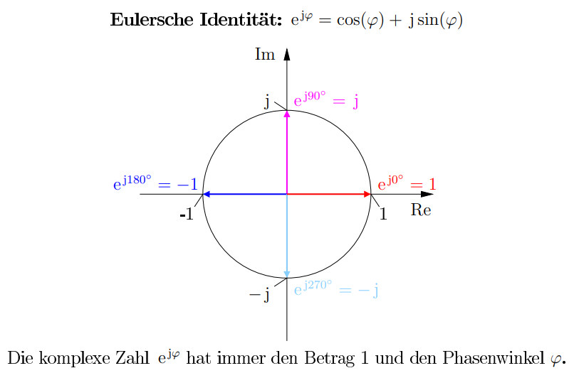

11 Komplexe Zahlen
- imaginäre Einheit
- Aufbau komplexer Zahlen
- Addition
- Subtraktion
- Betrag einer komplexen Zahl
- Polarkoordinaten
- Multiplikation
- Division
- Kehrwert
- Konjugiert-Komplex
11.1 Die imaginäre Einheit
Die imaginäre Einheit j ist definiert als:
\[j^2 = -1\]
Für höhere Potenzen von j erhält man:
\[j^2 = -1\]
\[j^3 = -j\]
\[j^4 = 1\]
\[j^5 = j\]
\[j^6 = -1\] usw.
11.2 Aufbau komplexer Zahlen
Komplexe Zahlen bestehen aus einem Real- und einem Imaginärteil. Sie werden durch einen Unterstrich gekennzeichnet. Ist der Buchstabe nicht unterstrichen, wird von dem Betrag der Komplexen Zahl geredet.
\[\underline{A} = Re\{\underline{A}\} + j \cdot Im\{\underline{A}\}\]
In der Elektrotechnik wird zur Kennzeichnung des Imaginärteils oft der Buchstabe j anstelle des i verwendet, da das i für die Bezeichnung des Stromes vorhergesehen ist.
11.3 Rechenoperationen
11.3.1 Addition von komplexen Zahlen
Zwei Komplexe Zahlen \(\underline{A}\) und \(\underline{B}\) werden addiert, indem ihre Real- und Imaginärteile getrennt voneinander addiert werden.
\[ \underline{A} + \underline{B} = Re\{\underline{A}\} + Re\{\underline{B}\} + j(Im\{\underline{A}\} + Im\{\underline{B}\}) \]
11.3.2 Subtraktion von komplexen Zahlen
Zwei Komplexe Zahlen \(\underline{A}\) und \(\underline{B}\) werden subtrahiert, indem ihre Real- und Imaginärteile getrennt voneinander abgezogen werden.
\[ \underline{A} - \underline{B} = Re\{\underline{A}\} - Re\{\underline{B}\} + j(Im\{\underline{A}\} - Im\{\underline{B}\}) \]
11.3.3 Betrag einer komplexen Zahl
Der Betrag einer komplexen Zahl \(\underline{A}\) ist die Euklidische Länge des Vektors, wenn dieser zum Beispiel in einem Koordinatensystem gezeichnet ist. Der Betrag wird als \(|\underline{A}|\) oder vereinfacht als A geschrieben.
\[ A = |\underline{A}| = \sqrt{Re\{\underline{A}\}^2 + Im\{\underline{A}\}^2} \]
11.3.4 Phasenwinkel einer komplexen Zahl
\[ \varphi = arctan\left(\frac{Im\{\underline{A}\}}{Re\{\underline{A}\}}\right) \]
Der Phasenwinkel wird überlicherweise von 0° bis 180° positiv (Zählweise CCW) und von 180° bis 360° negativ (Zählweise CW) angegeben.
11.3.5 Eulersche Identität und Polarkoordinaten
Komplexe Zahlen können auch als Polarkoordinaten über die Eulersche Identität beschrieben werden. Dabei setzt sich das aus Betrag und Phasenwinkel zusammen.
\[ \underline{A} = Re\{\underline{A}\} + j \cdot Im\{\underline{A}\} = A \cdot e^{j\varphi} \]
11.3.5.1 Eulersche Identität
\[ e^{j\varphi} = cos(\varphi) + j \cdot sin(\varphi) \]

Die komplexe Zahl \(e^{j\varphi}\) hat immer den Betrag 1 und den Phasenwinkel \(\varphi\).
11.3.6 Multiplikation komplexer Zahlen
Die Multiplikation ist über die Polarkoordinaten einfacher. Bei der Multiplikation werden die Beträge multipliziert und die Phasenwinkel addiert.
\[ \underline{A} \cdot \underline{B} = A \cdot B \cdot e^{j(\varphi_A + \varphi_B)} \]
11.3.7 Division komplexer Zahlen
Ähnlich zur Multiplikation wird bei der Division die Beträge dividiert und die Phasenwinkel subtrahiert.
\[ \frac{\underline{A}}{\underline{B}} = \frac{A}{B} \cdot e^{j(\varphi_A - \varphi_B)} \]
11.3.8 Kehrwert einer komplexen Zahl
Beim Kehrwert einer komplexen Zahl wird der Kehrwert des Betrages genommen und das Vorzeichen des Phasenwinkels invertiert.
\[ \frac{1}{\underline{A}} = \frac{1}{A} \cdot e^{-j\varphi} \]
11.3.9 Konjugiert-Komplex
Bei dem konjugiert-komplexen einer Zahl wird das Vorzeichen des Imaginärteils invertiert. Dadurch verändert sich der Betrag nicht, der Phasenwinkel wird allerdings auch invertiert.
\[\underline{A} = Re\{\underline{A}\} + j \cdot Im\{\underline{A}\}\]
\[\underline{A}^* = Re\{\underline{A}\} - j \cdot Im\{\underline{A}\}\]
11.4 Übungen
11.4.1 Aufgabe 2.1
\(\sqrt{-9} + \sqrt{-x^2} - \sqrt{-y^2} + \sqrt{-25}\)
\[3\sqrt{-1} + x\sqrt{-1} - y\sqrt{-1} + 5\sqrt{-1} = j3 + jx - jy + j5 = j(8 +x -y)\]
11.4.2 Aufgabe 2.2
\(\frac{3 j^3 \cdot 5 j^4}{6 j^{20}}\)
\(\frac{1}{j^5} + \frac{1}{j^7}\)
\[\frac{-j3 \cdot 5}{6 i^4} = \frac{-j15}{6} = -j2,5\]
\[\frac{1}{j} + \frac{1}{-j} = -j + j = 0\]
11.4.3 Aufgabe 2.3
\((1 + 2j) - (-2 + 3j) + (-3 + j) - (5 + 4j) - (-1 + 9j) + (5 - 8j)\)
\((-2a + 3j) - (u - uj) + (-2a -3j) - (-u - vj)\)
1 - j21
-4a + j(u + v)
11.4.4 Aufgabe 2.4
\((5 - 2j)(-3 + j)\) (Ergebnis in kartesischer Form)
\(\left(3\sqrt{2} + 5\sqrt{3}j\right)\left(3\sqrt{2} - 5\sqrt{3}j\right)\) (Ergebnis in kartesischer Form)
-13 + j11
93
11.4.5 Aufgabe 2.5
\(\frac{3 + 4j}{2 + j}\)
\(\frac{1}{\sqrt{5} - j}\)
\(\frac{3j}{1 - j}\)
\(\frac{(3 + 4j)(2 - j)}{(2 + j)(2 - j)} = \frac{6 + 8j - 3j + 4}{4 + 1} = 2 + j\)
\(\frac{1(\sqrt{5} + j)}{(\sqrt{5} - j)(\sqrt{5} + j)} = \frac{\sqrt{5} + j}{5 + 1} = \frac{\sqrt{5}}{6} + j\frac{1}{6}\)
\(\frac{3j(1 + j)}{(1 - j)(1 + j)} = \frac{-3 + 3j}{1 + 1}= -\frac{3}{2} + j\frac{3}{2}\)
11.4.6 Aufgabe 2.6
\(\frac{1 + j}{1 - j} + \frac{1 - j}{1 + j}\)
\(\frac{1 - j}{1 + j} - \frac{1 + j}{1 - j}\)
\(\frac{1 + j}{1 - j} + \frac{1 - j}{1 + j} = \frac{(1 + j)^2 + (1 - j)^2}{(1 - j)(1 + j)} = \frac{1 + 2j - 1 + 1 -2j - 1}{1 + 1} = 0\)
\(\frac{(1 - j)^2 - (1 + j)^2}{(1 + j)(1 - j)} = \frac{1 - 2j - 1 - (1 + 2j - 1)}{1 + 1} = \frac{-4j}{2} = -2j\)
11.4.7 Aufgabe 2.7
In die Exponentialform umwandeln:
\(0,5 - \sqrt{6}j\)
\(\sqrt{3} + \sqrt{3}j\)
3 - 2j
\(2,5 \cdot e^{j \cdot 4,914}\)
\(2,45 \cdot e^{j \cdot \frac{\pi}{4}}\)
\(3,61 \cdot e^{j \cdot 5,695}\)
11.4.8 Aufgabe 2.8
In die arithmetische Form umwandeln:
\(83 e^{j \cdot 1,1083}\)
\(3,8 e^{-j \cdot 5,524}\)
\(e^{0,2 + 1,2j}\)
\(83(cos(1,1083) + j sin(1,1083)) = 37,03 + j74,28\)
\(3,8(cos(-5,524) + j sin(-5,524)) = 2,757 + j2,616\)
\(e^{0,2}(cos(1,2) + j sin(1,2)) = 0,443 + j1,138\)
11.4.9 Aufgabe 2.9
Für \(z_1 = 1,5 - 0,5j\) und \(z_2 = 3 + 0,5j\) die Exponentialform berechnen und die folgende Gleichung in der arithmetischen Form angeben:
\[z = \frac{z_1 \cdot z_2}{z_1 + z_2}\]
\[z_1 = \frac{\sqrt{10}}{2} \cdot e^{-j \cdot 0,322}\]
\[z_2 = \frac{\sqrt{37}}{2} \cdot e^{j \cdot 0,165}\]
\[z_1 + z_2 = 4,5\]
\[\frac{\frac{\sqrt{370}}{4} \cdot e^{j(-0,322 + 0,165)}}{4,5} = 1,069 \cdot e^{-j 0,157} = 1,056 - j0,167\]
11.4.10 Aufgabe 2.10
Bringe den folgenden Term in die Darstellung \(\underline{A} = Re\{\underline{A}\} + j \cdot Im\{\underline{A}\}\):
\[\frac{\frac{1}{j\omega C}}{R + \frac{1}{j\omega C}}\]
\[ \frac{1}{j\omega RC} = \frac{1 - j\omega RC}{(1 + j\omega RC)(1- j\omega RC)} = \frac{1}{1 + (\omega RC)^2} - j\frac{\omega RC}{1 + (\omega RC)^2} \]
11.4.11 Aufgabe 2.11
Bringe den folgenden Term in die Darstellung \(\underline{A} = Re\{\underline{A}\} + j \cdot Im\{\underline{A}\}\):
\[\frac{\frac{1}{j\omega C}}{j\omega L + R + \frac{1}{j\omega C}}\]
\[ \frac{1}{- \omega^2 LC + j\omega RC + 1} = \frac{1 - \omega^2 LC - j\omega RC}{(1 - \omega^2 LC)^2 + (\omega RC)^2} = \frac{1 - \omega^2 LC}{(1 - \omega^2 LC)^2 + (\omega RC)^2} - j\frac{\omega RC}{(1 - \omega^2 LC)^2 + (\omega RC)^2} \]